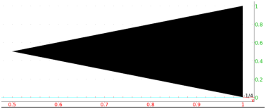
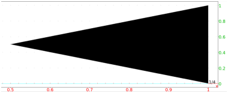

-
Input:
plotarea(polygon(1,(1+i)/2,1+i)
Output:

- Input:
plotarea(polygon(1,1+i,(1+i)/2)
Output:

- The fill color can be changed as a local feature (see
13.3.2) and the position of the legend can be
changed (see 13.3.3).
Input:
plotarea(polygon(1,1+i,(1+i)/2),display=red+quadrant2)
Output: